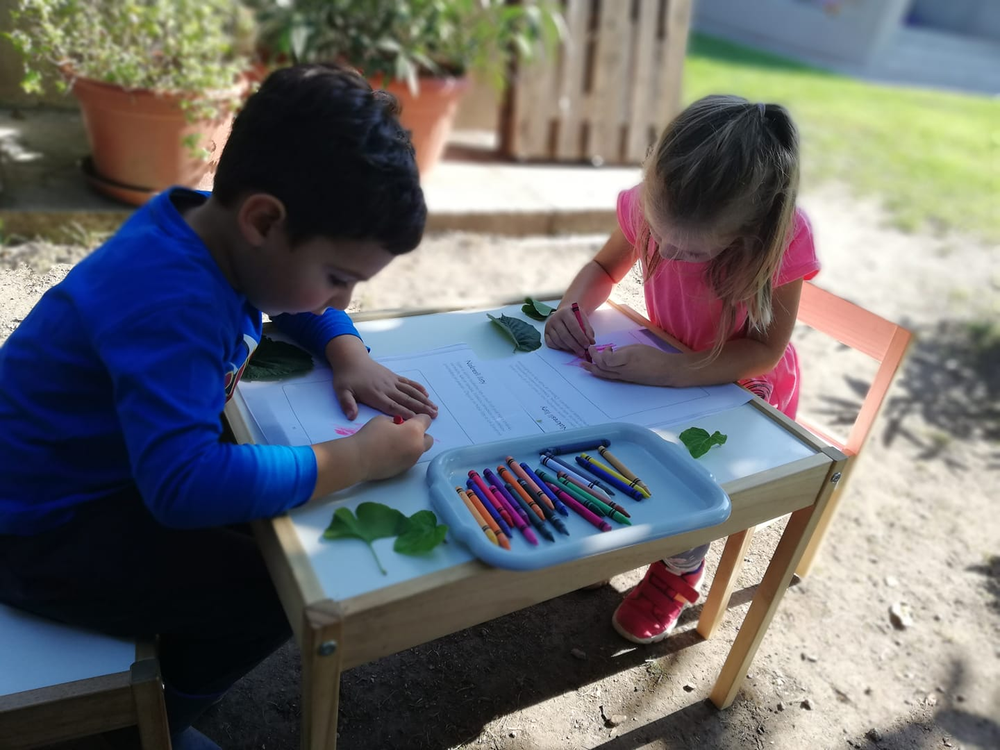
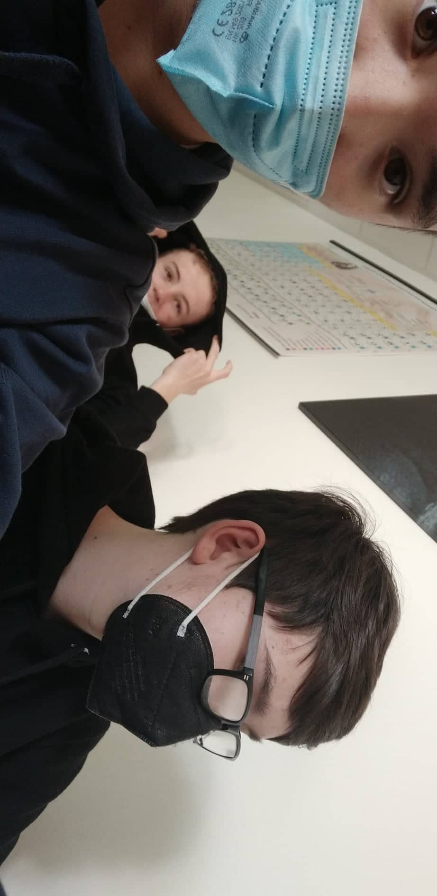

Narodil som sa v roku 2006 ako prvorodené dieťa v našej rodine. Detstvo som prežíval s rodičmi v dome v Lemešanoch ktorý doteraz ešte prerábame.  Keď som mal
2 roky narodila sa mi sestra
ja som si postupne hľadal prvých kamarátov ktorý boli najprv moji susedia.
V 4 rokoch som nastúpil
do škôlky kde som našiel mnoho ďalších kamarátov, z ktorími sa stretávam až do teraz, a spoznal som veľa milích a láskavých učiteliek ktoré sa o nás starali aj keď neraz sme im už liezli na nervy. Vtedy som
začínal mať prvé koníčky a záľuby ako napríklad futbal
alebo kreslenie.
Boli to pekné časi na ktoré doteraz s úsmevom spomínam aj keď
na vačšinu si ani nepametám.
Nastúpil som ňa nu ako prváčik
v roku 2012.
ú základnú sme boli veľmi malá trieda kde som nemla veľa kamarátov no nahradil som ich kamarátmi z mladšej triedy
kde som si ich našiel oveľa viac.
Mám s nimi veeeľmi veľa zážitkov na ktoré nikdy nezabudnem a spolu sme si prešli krásnych 9 rokov (dokonca jeden z
nich nastupuje na strednú školu kde som aj ja).
Počas základnej školy sa mi
podarilo urobiť niekoľko úspechov
ktoré sa mi vryli do pamate . Zúčastňoval som sa na mnoho súťažiach a turnajoch na ktorých sa mi pomerne
darilo.
Môj najvačší úspech bol v celoslovenskej súťaži Hľadá sa energia kde s mojimi kamarátmi v tíme sme
vyhrali tretie miesto
a 150 eur pre náš tím.
Teraz chodím na
Strednú Priemyselnú školu elektrotechnickú
kde som znova spoznal ďalších priateľov ktorých mám veľmi rád a viem že sa na nich môžem spoľahnúť.
Mám veľkú triedy kde je
mnoho múdrych a šikovných ludí
ktorých obdivujem a snažím sa s nimi čo najviac spolupracovať .
Štúdium som zataľ zvládal no myslím si že najťažšie ma ešte len čaká , ako napríklad koniec roka kde musím
zvládnuť mnoho testov a pokúsim sa získať certifikáty.
Pre viac info vypíš kontaktný formulár alebo si pozri moje socialne siete!